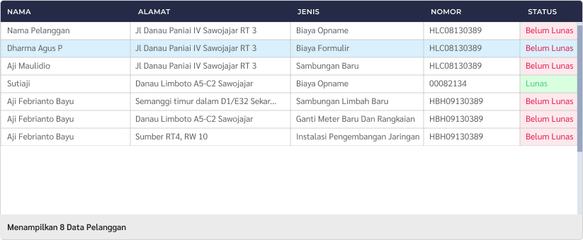

- Masuk ke menu "Tagihan" lalu pilih "Tagihan Non Air Lainnya" di sidebar menu kiri.
- Cari pelanggan dengan memasukkan kata kunci pencarian pada form berikut ini:
- Nama Pelanggan
- >Alamat Pelanggan
- Jenis Non Air
- Status Tagihan
- Periode Tahun Input
- Jika sudah memasukkan data, tekan tombol "Cari Pelanggan" untuk proses selanjutnya.
- Klik/ tekan 2 kali pada bagian nama pelanggan yang akan dipilih untuk menuju proses selanjutnya.
